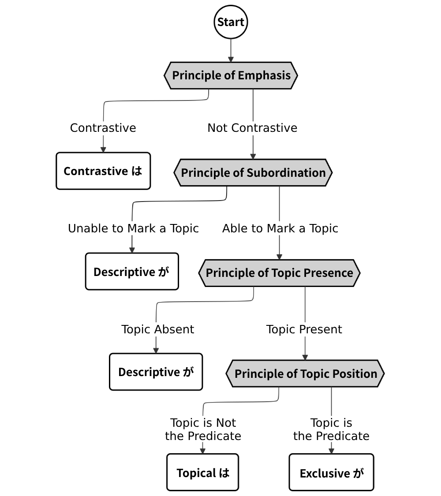
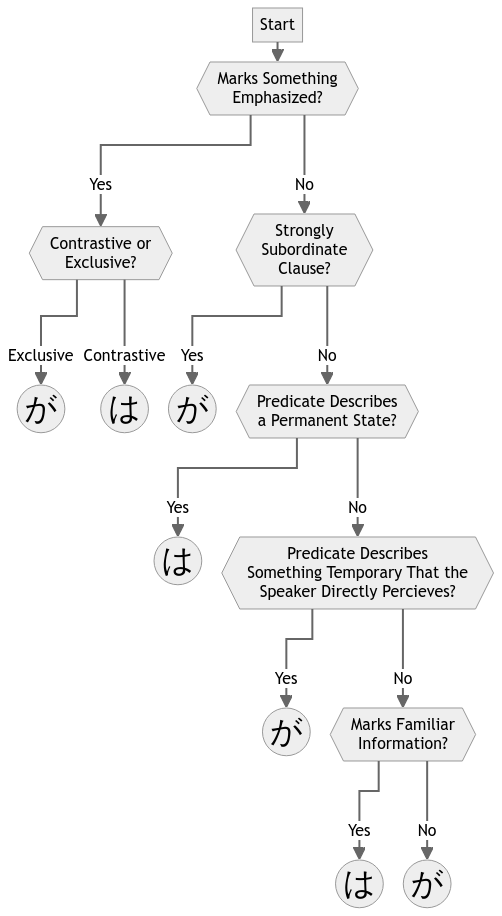

This article is one in a series that comprehensively explains usage of は vs. が in Japanese. Most content is directly pulled from 『｢は｣ と ｢が｣』 by Hisashi Noda.
The Flowchart Model
We can broadly categorize prior research findings about the Japanese topic into five main principles. There’s no need to memorize these.
- Exclusive が vs. Contrastive は (三上章 1963, 久野暲 1973)
- Subordinate Clauses vs. Main Clauses (南不二男 1974)
- Judgment Sentences vs. Phenomenon Sentences (三尾砂 1948)
- Old Information vs. New Information (松下大三郎 1930)
- Specification vs. Supposition (三上章 1953)
Further research into the role of は and が in Japanese syntax structures has made it possible to construct a hierarchy of priorities each of these principles take when it comes to choosing between the two particles. We can use this hierarchy to construct a flowchart, but we’ll have to change up these principles so that they play nicely with each other.
| Foundational Research → | New Principles |
|---|---|
| Exclusive が vs. Contrastive は → | Principle of Emphasis |
| Subordinate Clauses vs. Main Clauses → | Principle of Subordination |
| Judgment Sentences vs. Phenomenon Sentences → Old Information vs. New Information → |
Principle of Topic Presence |
| Old Information vs. New Information → Specification vs. Supposition → |
Principle of Topic Position |
Here’s the resulting flowchart:

The names of all of these new principles might sound daunting, but you can actually think of them as simple questions.
| New Principles | Question |
|---|---|
| Emphasis → | “How is it Emphasized?” |
| Subordination → | “Can The Clause Have a Topic?” |
| Topic Presence → | “Is There a Topic?” |
| Topic Position → | “Which Part is The Topic?” and “Where is it Placed?” |
We’ll take a look at the rules that govern these principles in Chapters 3 through 6.
There are two usages of が not covered in the flowchart: “Object-Marking が” explained in Chapter 7 and が in identificational sentences explained in the addendum.
EXTRA: Alternate Flowchart
This flowchart is one based off of the full flowchart adapted from Noda’s book that contains more yes/no questions. This is approximately my thought process when I want to think about why は/が is used in a sentence.

This chart doesn’t always lead to the actual usage of は/が, partly because it doesn’t account for some rules that you’ll read about in the next sections, and partly because usage of は/が is mostly, but not entirely predictable.
EXTRA: The Unpredictability of は and が
There is evidence that the usage of は and が is not entirely predictable. The following examples (1) and (2) are introductory sentences from two different newspaper reports about the same story. But (1) is a topicless sentence, and (2) is a topic sentence.
1. インドのラオ外相が十七日午後六時前、大阪空港着の日航機で来日した。
Indian Foreign Minister Rao arrived in Japan on a Japan Airlines flight at Osaka Airport just before 6:00 p.m. on the 17th. - (｢朝日新聞｣ 1982.4.18 新刊 p.2)
2. インドのナラシマ・ラオ外相は十七日午後六時前、大阪空港着の日航機で来日した。
Indian Foreign Minister Narasimha Rao arrived in Japan on a Japan Airlines flight at Osaka Airport just before 6:00 p.m. on the 17th. - (｢毎日新聞｣ 1982.4.18 新刊 p.2)
Here is another example. 長友和彦 (1991) conducted a survey asking people to answer whether they would use は or が within the brackets【 】in the passage below (from『雪国』by 川端康成).
3. 汽車が動き出しても、彼女は窓から胸をいれなかった。そうして路線の下を歩いている駅長に追いつくと、
｢駅長さん、今度の休みの日に家へお帰りって、弟に言ってやってください。｣
｢はあい。｣ と、駅長【 】声を張りあげた。
Even as the train began to move, she kept her body out of the window. As she passed the conductor walking below the tracks, she yelled,
“Mr. Conductor! Tell my brother to come back home when he can!”
“I will!” the conductor shouted back.
30% of those surveyed responded that they would use が (which was what was originally in the text), and 70% responded that they would use は.
In our flowchart, this unpredictability in the examples above stems from the “Principle of Topic Presence” stage. However, there is slight unpredictability at all stages of the flowchart.